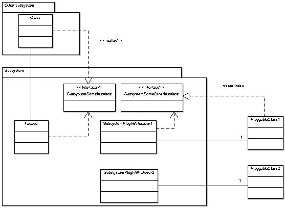

All ArgoUML code is organized in subsystems.
Each subsystem has:
- A name
- A single directory/Java package where it resides
- Subparts of the subsystem can reside in subdirectories of this directory. Auxiliary parts, implemented in other products, of the subsystems can reside somewhere else. Notice that each other product used by ArgoUML is, in the design, located within one of the existing subsystems. This means that a change of version or indeed a change of choice of such a dependency is an internal matter for the subsystem and should ideally not affect any other subsystem.
- All public and protected methods of all public and protected classes in this directory constitute the API of that subsystem.
A Wiki page for the subsystem. The wiki is named <<Subsystem>> Name and shall contain:
- the resonsibilities,
- the package name,
- the API,
- the Facade (if any),
- all the plug-in interfaces (if any), and
- the design of the subsystem.
Each subsystem can have:
- a Facade class
- The facade can be used by all other subsystems when using the subsystem.
The Facade class is called SubsystemNameFacade and is located in the subsystem package. How it is used is primarily documented in the class file itself (as javadoc) but the more complex picture is documented on the Wiki page of the subsystem
- Plug-in interfaces.
- These are Facade objects where modules or plug-ins can connect themselves to modify or augment the behavior of that subsystem.
The plug-in interfaces are also all located in the subsystem package and called SubsystemNamePluginPluginType. Example: ModelPluginDiagram, ModelPluginType.
If the subsystem uses a callback-technique the callback is always made to an interface defined by the subsystem. The interface is also in the subsystem package and it is called SubsystemNamePluginTypeInterface. Example: ModelDiagramInterface, ModelTypeInterface.
